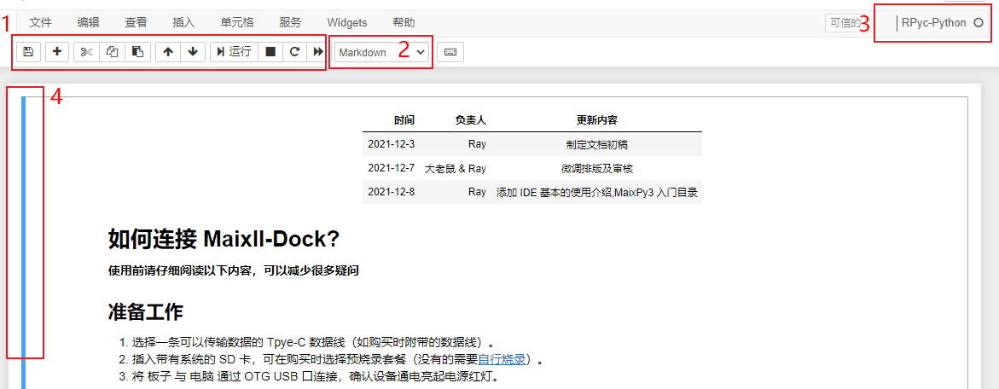
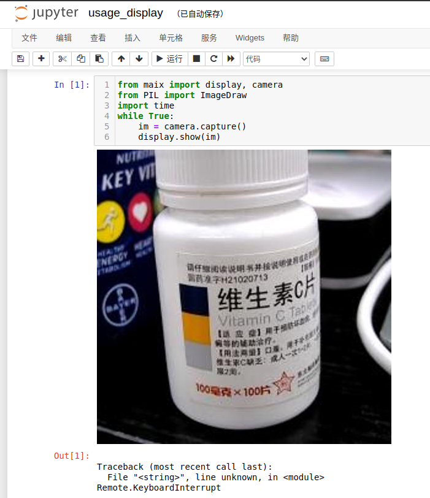

安装 IDE
下载站链接：下载 MaixPy3 IDE
百度网盘下载链接：链接：点我
为什么要使用 IDE ？
在没有 IDE 的时候，我们是这样编程的；这是每一只远古程序猿都必备的开发技能。
上述命令行的编程方式是上世纪 80 年代流行的开发方式，建议在有一定的 linux 基础后再来使用会比较好。
但 2022 现代 IDE 工具的重点应该是传达出 Python 代码所运行的结果或效果。
如果你是一名开发者，你要如何教会初学者使用你的代码？像你一样使用命令行敲出来看实际的效果吗？
- 对初学者来说，这一定是一场灾难，所以我们需要 IDE 来结束这一场悲剧。
那么 MaixPy3 IDE 是什么?
它是一套基于 jupyter 实现的 Python3 集成开发环境，意在帮助用户通过电脑编写 Python 代码或阅读运行他人提供的 jupyter notebook 文档后，接上硬件后点击【▶ 运行】可以实时呈现如下效果图。

为了方便新入门的同学进行学习，在 Jupyter 文档中你可以单步执行代码，保留输出的结果，还能将屏幕显示的内容展示出来。
软件具备的特点如下：
- 通过 TCP/IP 连接开发板，支持在本机运行 Python 代码，实时反馈开发板的运行结果或图片
- 通过 jupyter notebook 文档可以保存每一次的运行结果，方便知识的传播
- 继承 ipython 实现 Python 语法的高亮和补全功能（可以按 tab 进行补全或提示）
如何安装 MaixPy3 IDE ？
软件安装方法和注意事项要严格看本文说明
MaixPy3 IDE 的构成主要如下：
- 一个在后台运行的托盘程序。
- 一个 jupyter 服务程序。
用户使用与排查流程主要如下：
- 确认所用的系统平台，确定安装方法
- 确认所用的开发硬件，查看对应的系统配置方法
- 确认系统防火墙没有阻止 TCP 的 18811 和 18812 端口，不清楚就关闭网络防火墙或安全软件
- 确认硬件的 MaixPy3 的 Python 包和电脑上的 IDE 版本为 0.4.0 以上
- 确认 所用硬件的 连接和配置方法，确认没有被杀毒程序给阻止且已经授予程序权限
- 若是仍然出现问题，将上述流程打包起来反馈给社区并@管理员解决
关于 Windows 平台的安装方法
在文章开头处下载即可。
注意事项:
- 只支持 Windows7 或 Windows10 32 位以上的系统
- 需要内核为Chromium的浏览器,比如 Microsoft Edge 或 Chrome。
- Windows11 测试样本极少，需要慎重选用
可以看下面的视频来看具体操作：
补充说明：
- 安装完 IDE 后务必安装弹出窗口的驱动
- 记得像视频中一样卸载掉对应的 ADB 驱动
若下载站下载很慢，可以在文章开头处获取百度云链接
2022年1月15日 收到用户的反馈点
曾经有自己手动配置过环境的同学，需要在删除你系统的 C:\Users\（改成你电脑的用户名）\AppData\Roaming\jupyter\kernels\rpyc 防止调用核心时调用了过去的旧核心导致错误发生。
关于 Mac 和 linux 其他平台的安装方法
如果你不喜欢提供的 pyinstaller 打包的版本，可以自行配置 python 、jupyter 、ikernel 等基础环境，自行 pip 手动安装和配置环境。
但是需要你具备一定的 python 基础，请阅读 rpyc_ikernel 完成安装即可，手动安装脚本的方法如下：
pip install rpyc_ikernel
python -m rpyc_ikernel.install
此时执行 jupyter notebook 或 lab 即可。
MaixPy3 IDE 界面介绍
下面介绍一下软件的工作区域和环境。
程序主界面介绍
- 为文件选择区，点击即可进入 Jupyter 文档中
- 为文件上传，是将文件上传到 MaixPy3 IDE 的工作区当中，并不是将文件上传到开发板中
- 为新建文件或者是文件夹
- 退出 MaixPy3 IDE。直接关闭浏览器的话 MaixPy3 IDE 是还会在后台中运行的
新建文件
MaixPy3 IDE （jupyter） 新建文件(上图中的2)的时候，可以选择多个 Python 执行核心。

- 选择 Python3 的话此时里面的相关代码是运行在本机上的。
- 选择 RPyc-python，此时相关代码运行在板子上
jupyter notebook 文档界面

- 单元格工具栏，可以对单元格进行复制、粘贴、运行、停止等操作
- 当前单元格的属性，可以切换单元格属性为 代码 或者 markdown
- 显示当前文档运行代码属性单元格时所使用的内核
- 蓝色边框表示单元格处于命令模式。绿色边框表示单元格为编辑模式
Jupyter 用法简介
与 vim 类似，jupyer 有命令模式和编辑模式Shift+ Enter ：运行单元格，且以命令模式切换到下一个单元格
Ctrl + Enter ：运行单元格，且进入命令模式
Esc ：进入命令模式
h :打开帮助
Enter :进入编辑模式
x :剪切单元格
c :复制单元格
v :粘贴单元格
dd :删除整个单元格
ii :终止运行
借助于 notebook 文档，你可以看到编辑者的文本描述、代码和相关运行结果，非常适合新人边看边学
编辑者文本描述

相关代码实例，直接点击运行就可以看到
图片展示结果，直接点击运行可以复现

这也是 jupyter 的魅力之一吧，有兴趣的话也可以直接分享 ipynb 文件 来向他人展示你的代码
注意 MaixPy3 IDE 的 jupyter notebook 的服务是运行在主机上的，因此所有相关文件和工作区都是在本机上的
[附录]遇到问题应该如何解决？
为了降低初学者的搭建和上手时间，我们做了大量的努力，但仍然无法完全解决每个人因环境差异而可能导致的不同问题，这里对 IDE 的工作原理做一些解释，它实际上就是打包的 (python + jupyter notebook + rpycikernel ).exe 帮你省了安装配置的时间。
IDE 连接原理
这里我们以典型硬件 V83X 和 R329 的为例。
因为 V83X 因为支持 usb adb forward 功能，可以通过转发 TCP/IP 地址进行 IP 映射的端口绑定；而 R329 只能通过 TCP/IP 地址进行连接。但从设计上来说 IDE 只支持 TCP/IP 地址的连接方法，所以要确保 TCP 的远程调用端口 18811 和 18812 图传端口没有被防火墙阻止，那么如何确认呢？
最起码的就是互相 ping 对方的 IP 确保该 IP 下的通路可行。如果 IP 确定是可以连通的，则我们需要确定远程调用的服务是否存在。
通常里面需要一个 rpyc + mjpg 的服务去维持远程调用，如果是 V83X 则会自动经过 adb shell 完成调用 实现在 github 这里；如果是 R329 则需要手动启动该服务，或配置成开机自动启动，从而避免下次手动启动。
如果遇到 IDE 链接失败，就先使用板子所运行的 linux 系统中的 ps 命令检查维持 IDE 链接的 Python 程序（python3 -c from maix import mjpg;mjpg.start();）是否存在（如 S 表示正在运行）。可以参考下图中的命令
若是通道+服务均正常，那 IDE 就一定可以连上，还需要注意的就是 IDE 默认连接的 IP 地址是 localhost；如果你本机的网卡环境比较混乱，可能你需要在 IDE 里手动指定一下 IP 才能确保正确连接上，如：$connect("192.168.0.23")。
下图为 IDE 通过无线网在 Maixsense 上运行代码的结果，同样也适用于在 V831 上。只是说明一下可以指定 IP 然后通过无线运行（需要确定板子上已经有python3 -c from maix import mjpg;mjpg.start();在运行，没有的话可以手动执行一下 python3 -c "from maix import mjpg;mjpg.start();"）
结语
MaixPy3 IDE 依赖于 jupyter、rpyc_ikernel、MaixPy3 开源仓库实现，目的是为了让新用户更直观地运行代码，感兴趣的可以自行了解。
其实所谓的 IDE 就是 jupyter 的打包版本，知道了工作机制后，还不赶紧用起来？